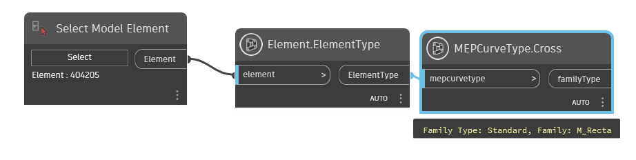
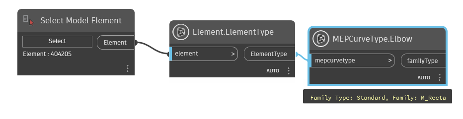
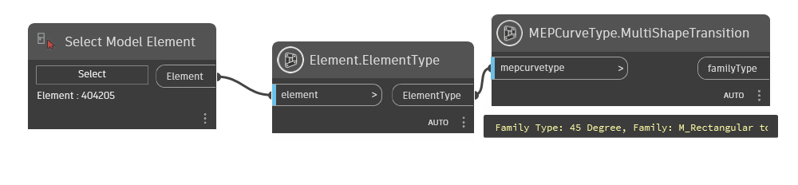
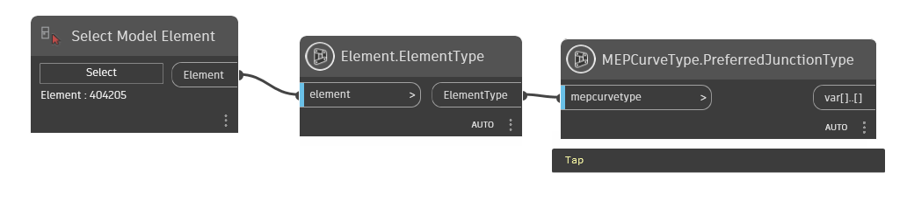
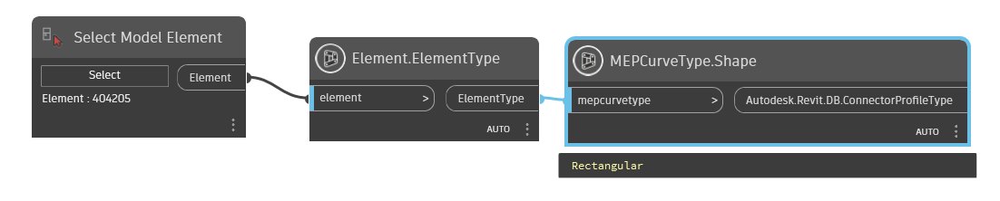
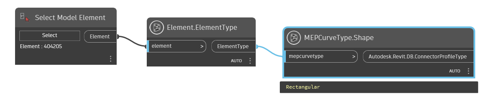
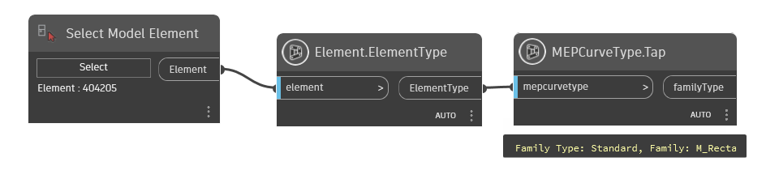
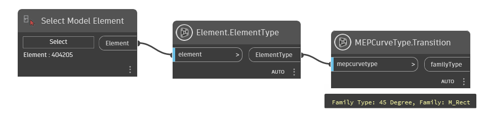
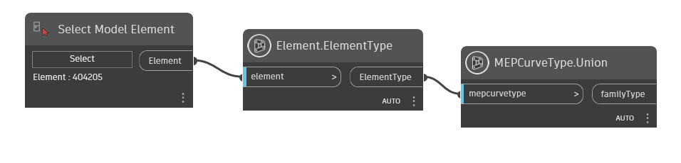

Class MEPCurveType
- Namespace
- OpenMEP.Element
- Assembly
- OpenMEP.dll
The base type class for MEP curves, such as ducts, pipes, cable trays and conduits.
public class MEPCurveType- Inheritance
-
MEPCurveType
- Inherited Members
Methods
Cross(Element)
The default cross fitting of the MEP curve type.
[NodeCategory("Query")]
public static Element? Cross(Element mepcurvetype)Parameters
mepcurvetypeElement
Returns
- Element
Cross fitting
Examples

Remarks
This property is used to retrieve the default cross fitting of the MEP curve type, and can be null if there is no default value. Use Autodesk.Revit.DB.RoutingPreferenceManager to set this property for PipeType MEPCurves.
Elbow(Element)
The default elbow fitting of the MEP curve type.
[NodeCategory("Query")]
public static Element? Elbow(Element mepcurvetype)Parameters
mepcurvetypeElement
Returns
- Element
Elbow fitting
Examples

Remarks
This property is used to retrieve the default elbow fitting of the MEP curve type, and can be null if there is no default value. Use Autodesk.Revit.DB.RoutingPreferenceManager to set this property for PipeType MEPCurves.
MultiShapeTransition(Element)
The default multi shape transition fitting of the MEP curve type.
[NodeCategory("Query")]
public static Element? MultiShapeTransition(Element mepcurvetype)Parameters
mepcurvetypeElement
Returns
- Element
multi shape transition fitting
Examples

Remarks
This property is used to retrieve the default multi shape transition fitting of the MEP curve type, and can be null if there is no default value. Use Autodesk.Revit.DB.RoutingPreferenceManager to set this property for PipeType MEPCurves.
PreferredJunctionType(Element)
The preferred junction type of the MEP curve type.
[NodeCategory("Query")]
public static dynamic PreferredJunctionType(Element mepcurvetype)Parameters
mepcurvetypeElement
Returns
- dynamic
Examples

Remarks
Use Autodesk.Revit.DB.RoutingPreferenceManager to set this property for PipeType MEPCurves.
Roughness(Element)
The roughness of the MEP curve type. For PipeTypes, please use Segment::Roughness
[NodeCategory("Query")]
public static double Roughness(Element mepcurvetype)Parameters
mepcurvetypeElement
Returns
- double
Roughness
Examples

Shape(Element)
The shape of the profile.
[NodeCategory("Query")]
public static dynamic Shape(Element mepcurvetype)Parameters
mepcurvetypeElement
Returns
- dynamic
ConnectorProfileType
Examples

Tap(Element)
The default tap fitting of the MEP curve type.
[NodeCategory("Query")]
public static Element? Tap(Element mepcurvetype)Parameters
mepcurvetypeElement
Returns
- Element
Tap fitting
Examples

Remarks
This property is used to retrieve the default tap fitting of the MEP curve type, and can be null if there is no default value. Use Autodesk.Revit.DB.RoutingPreferenceManager to set this property for PipeType MEPCurves.
Transition(Element)
The default transition fitting of the MEP curve type.
[NodeCategory("Query")]
public static Element? Transition(Element mepcurvetype)Parameters
mepcurvetypeElement
Returns
- Element
transition fitting
Examples

Remarks
This property is used to retrieve the default transition fitting of the MEP curve type, and can be null if there is no default value. Use Autodesk.Revit.DB.RoutingPreferenceManager to set this property for PipeType MEPCurves.
Union(Element)
The default union fitting of the MEP curve type.
[NodeCategory("Query")]
public static Element? Union(Element mepcurvetype)Parameters
mepcurvetypeElement
Returns
- Element
union fitting
Examples

Remarks
This property is used to retrieve the default union fitting of the MEP curve type, and can be null if there is no default value. Use Autodesk.Revit.DB.RoutingPreferenceManager to set this property for PipeType MEPCurves.